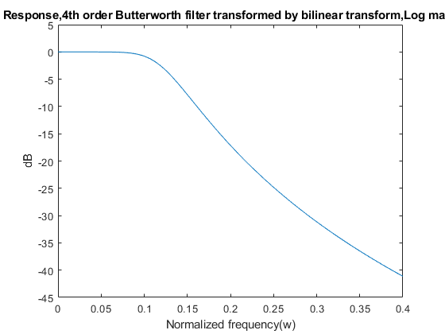
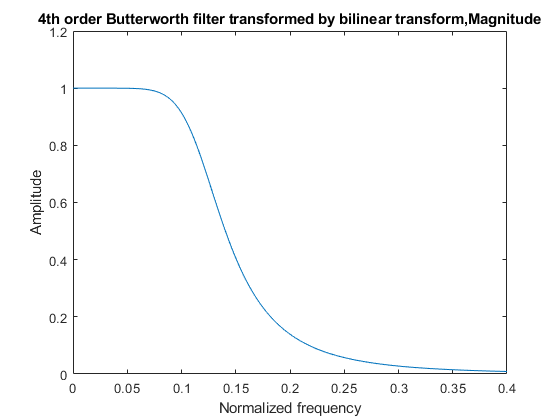
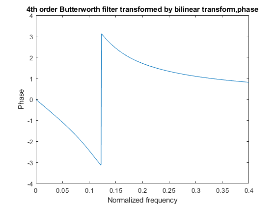
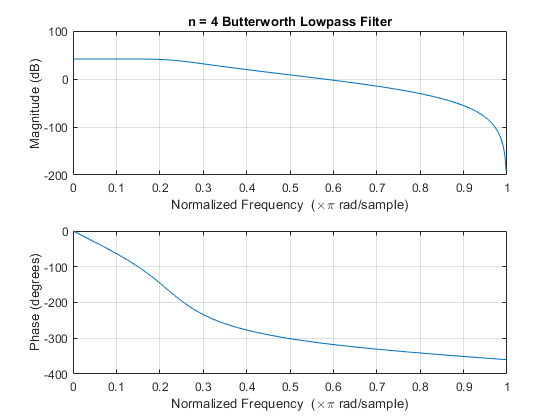
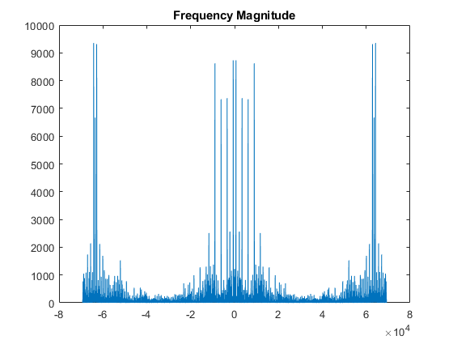
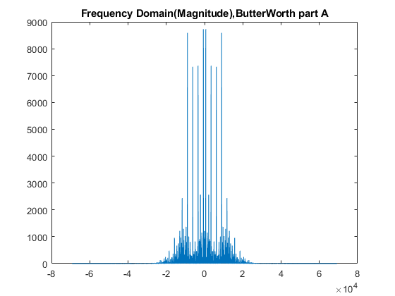
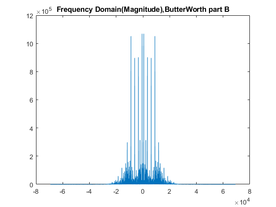

Contents
clear;
close all;
clc;
Question Two, Part A
OmegaP=0.32491;
OmegaS=0.72654;
Rp=1;
As=20;
T=2;
Fs=1/T;
[cs,ds] = afd_butt(OmegaP,OmegaS,Rp,As);
[C,B,A] = sdir2cas(cs,ds)
[db,mag,pha,w] = freqs_m(cs,ds,0.4*pi);
[b,a] = bilinear(cs,ds,Fs);
bBut1=b;
aBut1=a;
[C,B,A] = dir2cas(b,a)
figure(1)
plot(w/pi,db)
title('Frequency Response,4th order Butterworth filter transformed by bilinear transform,Log magnitude in dB')
ylabel('dB');xlabel('Normalized frequency(w)');
figure(2)
plot(w/pi,mag)
title('4th order Butterworth filter transformed by bilinear transform,Magnitude')
ylabel('Amplitude');xlabel('Normalized frequency');
figure(3)
plot(w/pi,pha)
title('4th order Butterworth filter transformed by bilinear transform,phase')
ylabel('Phase');xlabel('Normalized frequency');
*** Butterworth Filter Order = 4
C =
0.0219
B =
0 0 1
A =
1.0000 0.7108 0.1480
1.0000 0.2944 0.1480
C =
0.0082
B =
1.0000 2.0000 1.0000
1.0000 2.0000 1.0000
A =
1.0000 -0.9167 0.2352
1.0000 -1.1814 0.5918
  
Question Two, Part B
wp=0.2*pi;ws=0.4*pi
N=(log10((10^(Rp/10)-1)/(10^(As/10)-1)))/(2*log10(OmegaP/OmegaS))
N=ceil(N)
OmegaC=OmegaP/(10^(Rp/10)-1)^(1/(2*N))
wn=(2/pi)*atan(OmegaC*T/2)
[b,a,k] = butter(N,wn,'low');
ts=0.1;
sys = zpk(b,a,k,ts)
b=poly(b);
a=poly(a);
figure(4)
freqz(b,a)
title(sprintf('n = %d Butterworth Lowpass Filter',N))
bBut2=b;
aBut2=a;
ws =
1.2566
N =
3.6945
N =
4
OmegaC =
0.3847
wn =
0.2338
sys =
0.0081684 (z+1)^4
------------------------------------------------
(z^2 - 0.9167z + 0.2352) (z^2 - 1.181z + 0.5918)
Sample time: 0.1 seconds
Discrete-time zero/pole/gain model.

Question Two, Part C
[y,Fs] = audioread('HW3_Q2_multi_tone.wav');
n=length(y);
y=y(Fs:2*Fs);
y=y';
fftsignal=fft(y);
fftsignal = fftshift(fftsignal);
f=Fs/2*linspace(-pi,pi,length(fftsignal));
figure(5)
plot(f,abs(fftsignal))
title('Frequency Magnitude')
output=filter(bBut1,aBut1,y);
outft=fft(output);
outft=fftshift(outft);
figure(6)
plot(f,abs(outft))
title('Frequency Domain(Magnitude),ButterWorth part A')
output=filter(b,a,y);
outft=fft(output);
outft=fftshift(outft);
figure(7)
plot(f,abs(outft))
title('Frequency Domain(Magnitude),ButterWorth part B')
  